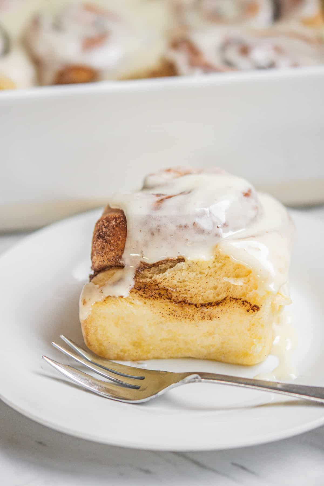

Cinnamon Brioche

Ingredients
125mL Milk
2 1/2 Tsp Instant Yeast
50g sugar
600g flour
5 large eggs
1 1/2 tsp salt
230g unsalted butter
75g unsalted butter
soft brown sugar
1 Tbsp ground cinnamon
60g cream cheese
150g confectioners sugar
2Tbsp milk
1/2 Tsp vanilla extract
Instructions
In a bowl of a stand mixer fitted with a dough hook, add the milk and stir in the yeast and one tablespoon of sugar. Leave it to sit for 5-10 minutes until foamy.
Add to it the remaining sugar, eggs, flour, and salt. Turn the mixer on low and combine until it forms a thick but slightly sticky dough. Mix this dough for around 5 minutes to begin developing the gluten.
Add in the cubed butter, a few pieces at a time. Incorporate each cube before the next addition.
Turn the mixer on medium and keep it mixing until the sticky dough starts to strengthen and come together and pull away cleanly from the sides of the bowl. Mix the dough for the best gluten development and brioche crumb for at least 15 minutes. Proper gluten development will allow you to stretch the dough so thin you can almost see through it. This is called the 'window pane' test.
Pull the dough from the bowl onto a bench and form it into a ball. Place the dough ball into a clean bowl and cover it. Let it proof at room temperature for 1- 2 hours until doubled in size. The rising time will depend on room temperature.
Deflate the dough gently and reshape it into a ball again. Cover it with an airtight lid or plastic wrap and place it in the fridge overnight. This step can be shortened, but 8-12 hours long cold proof gives the best flavor.
Home
Browse